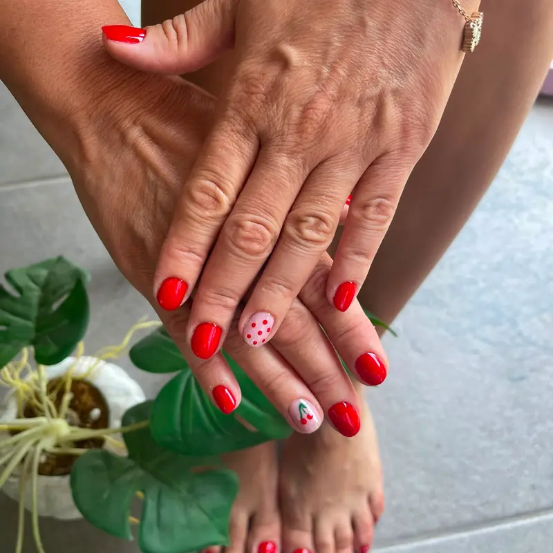

Fleura Nails salon değil, hizmet alanı işletmesidir: tüm ekipmanı ve steril malzemeyi alıp sizin adresinize geliriz. Aşağıda İzmir genelinde sunduğumuz tüm uygulamaları, ortalama sürelerini ve hangi durumda hangisinin size uygun olduğunu bulacaksınız.

Uygulamalar ve Ortalama Süreleri
Kalıcı Oje
45-60 dk. 2-3 hafta dayanır. Klasik, French, ombre, mat ve glitter seçenekleri.
Protez (Jel) Tırnak
90-150 dk. Uzunluk ve form seçimi: badem, kare, oval, stiletto, coffin.
Protez Tırnak Dolumu
60-90 dk. 2-4 haftada bir. Uzayan dip kısmın kapatılması ve form yenileme.
Rus Manikürü
60-75 dk. Frezeyle kuru teknik; kesme işlemi olmadan daha temiz ve uzun ömürlü dip.
Manikür & Pedikür
Manikür 30-45 dk, pedikür 45-60 dk. Şekillendirme, kütikül bakımı, nemlendirme.
Nail Art
Tasarıma göre +15-45 dk. Referans görselden birebir uygulama yapılabilir.
Gelin Tırnağı
Prova + düğün seansı. Elbise ve konseptle uyumlu, fotoğrafı güzel çıkan tasarım.
Güçlendirme & IBX
Kırılgan ve yarılan tırnaklar için onarıcı bakım ve keratin desteği.
Hangisini Seçmelisiniz?
En sık gelen soru bu. Kısa bir yönlendirme:
- Tırnağım yeterince uzun, sadece kalıcı renk istiyorum → Kalıcı oje.
- Tırnağım kısa veya kırılıyor, uzunluk istiyorum → Protez tırnak.
- Dibim çabuk kabarıyor, kesimden rahatsızım → Rus manikürü.
- Zaten protezim var, 3 hafta oldu → Dolum.
- Özel bir günüm var → Nail art veya gelin tırnağı.
Kararlı değilseniz Kalıcı Oje mi Protez Tırnak mı? yazımız iki uygulamayı dayanıklılık, maliyet ve tırnak sağlığı açısından karşılaştırıyor.
Her Randevuda Standart Olanımız
- Steril ekipman: Metal aletler otoklavda sterilize edilip kapalı poşette taşınır.
- Tek kullanımlık sarf: Törpü, buff ve freze uçları kişiye özeldir.
- Premium ürün: Dayanıklılık ve tırnak sağlığını birlikte gözeten markalar.
- Kendi alanınız: Salon sırası ve trafik yok; çocuklu anneler için büyük kolaylık.
Hizmet Verdiğimiz Bölgeler
İzmir'in merkez ilçelerinin tamamına ve yaz aylarında Çeşme-Alaçatı hattına geliyoruz:
Fiyatları etkileyen faktörleri merak ediyorsanız fiyatlandırma sayfamızı inceleyebilirsiniz.
Sık Sorulan Sorular
Salonunuz var mı, yoksa sadece eve mi geliyorsunuz?
Salonumuz yok. Fleura Nails bir hizmet alanı işletmesidir; tüm ekipman ve steril malzemeyle sizin adresinize geliriz. Ev, ofis veya otel fark etmez.
Bir randevu ortalama ne kadar sürüyor?
Kalıcı oje 45-60 dakika, protez tırnak 90-150 dakika, dolum 60-90 dakika, manikür 30-45 dakika, pedikür 45-60 dakika. Nail art tasarımın detayına göre 15-45 dakika ekler.
Aynı randevuda birden fazla kişiye uygulama yapıyor musunuz?
Evet. Anne-kız, kardeş veya arkadaş grupları için aynı adreste arka arkaya seans planlıyoruz. Grup randevularını önceden bildirmeniz süre planlaması açısından yeterli.
Hijyeni nasıl sağlıyorsunuz?
Metal aletler otoklavda sterilize edilip kapalı poşetlerde taşınır ve randevuda önünüzde açılır. Törpü, buff ve freze uçları tek kullanımlıktır.
Randevuyu ne kadar önceden almalıyım?
Hafta içi için 2-3 gün önce yeterli oluyor. Hafta sonu, özel gün dönemleri ve gelin randevuları için daha erken planlama öneriyoruz.
Hangi Uygulamanın Size Uygun Olduğunu Birlikte Belirleyelim
Tırnak yapınızı, günlük rutininizi ve beklentinizi anlattığınızda size en uygun uygulamayı öneriyoruz. Randevu ve fiyat bilgisi için yazın.